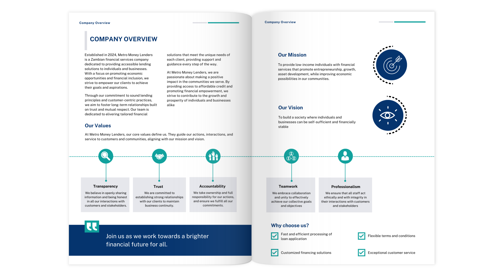
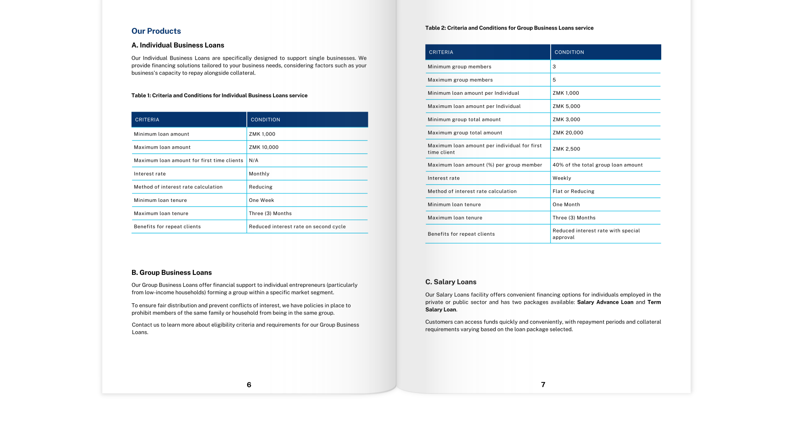

Editorial Design: Metro Money Lenders Company Profile
Content development, design and layout of a 10-page company profile for Metro Money Lenders. Metro is a Zambian microfinance company offering accessible lending solutions to individuals and small businesses.
Metro Money Lenders launched in 2024 with a clear product offering but no formal documentation to support it. For a lending company this matters. Potential borrowers and partners need to understand exactly what is available before they engage.
The challenge was presenting four different loan products each with their own eligibility criteria, interest structures and conditions in a way that felt clear and trustworthy rather than overwhelming.
All written content was developed from scratch. This included the company overview, mission and vision, core values and product descriptions. The language needed to build trust quickly. For a lending company that means being direct and transparent without being dense.

The profile is structured across two sections. The company overview establishes credibility through values, mission and vision. The services section moves directly into product detail. Loan types and their conditions are presented side by side so a reader can compare them without having to search.
The design uses the company's navy and teal brand palette with a clean professional layout. Loan criteria are presented as structured tables rather than prose so the conditions are scannable. Icons and visual elements break up the page without losing the formal tone the brand required.

- Company overview covering background, core values, mission and vision.
- Four loan products: Individual Business Loans, Group Business Loans, Salary Loans and Asset-Based Loans.
- Structured criteria tables for each product covering loan amounts, tenure, interest rates and repeat client benefits.
- The Salary Loans product broken down across two packages: Salary Advance and Term Salary with shared incentives outlined separately.
- An accepted movable items reference table for the Asset-Based Loan product.

The complete company profile is available to view. All personal contact details have been anonymised to protect client confidentiality. References from the client are available upon request.
View the Document